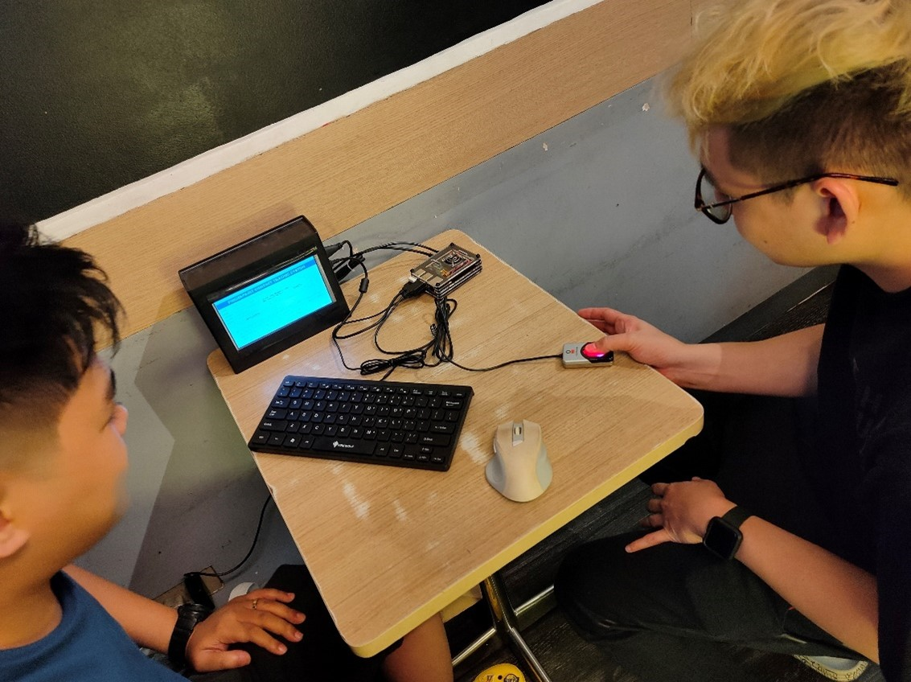
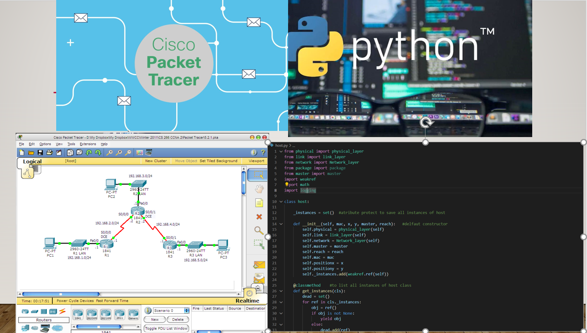
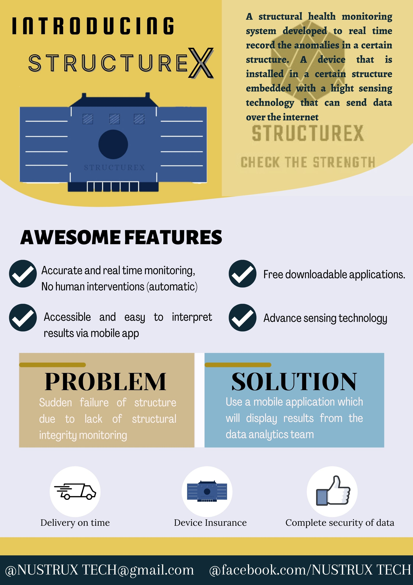
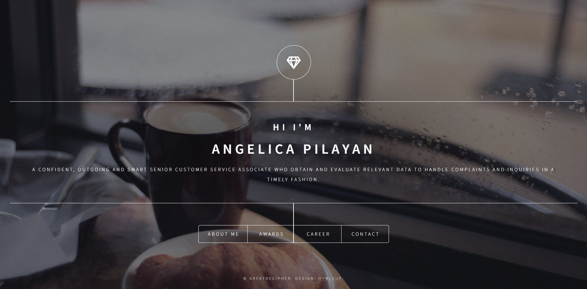

The essence of this portfolio is to highlight all the skills that I can show in a company whether it was
from the previous or for the future companies. It shows what I am capable of as an employee and as a
learner.

The project aims to implement a wireless network simulator, with definition of layers: physical, link and
network. Using concepts such as hosts, communication protocols, position of devices in an environment, in
order to evaluate the performance of the system.

The aim of this project is to Market a product that is tech advanced and we came up with
Structurex which is a realtime Structural Health Monitoring System developed by young
Engineers from NUSTRUX tech (which is our group name) It is composed of an Advance Sensing device based on
Internet of Things. This is accompanied by a Mobile Application called Strux for an easy
interpreted feedback of a structure’s condition.

I also design websites for Online Portfolio. Here is my client where I designed her website portfolio for highlighting her skills for her dream job as a Financial Analyst. Check her website: @angiepilayan